Đã 2 năm kể từ lần cuối tôi ở Tân Gia Ba. Lần này cũng không có vlog (vì lười và vì một số thứ không quay được), nên thôi vẫn là dạng chữ vậy.
Lần này, tôi sang thăm đàn em ở NUS vào recess week (nhưng vì chính là recess week nên các em bận vl). Tôi nhân tiện thăm luôn bạn bè cũ và chốn cũ. Ngoài ra thì tôi cũng xin đi làm ở trụ sở Sing của công ty tôi (để đỡ mất ngày phép và để đỡ chán khi các em ôn thi vào ban ngày).
Thứ 7, 19/9
Tôi sửa soạn từ sớm, vác theo cả ít bánh trung thu (quà công ty) sang cho các em. Cũng định xách mấy bao thuốc lá Tàu (được thằng bạn quen hồi 2 năm trước ở NUS tặng), nhưng chả hiểu sao đầu nhảy số nên vứt lại ở nhà. Vì dự kiến phải ra sân bay lúc 6h sáng nên tối đó tôi ngủ không được. Đặt GrabCar từ 5h45 đến 6h10, sau 2 lần bị tài hủy thì quá tam ba bận.
Qua cửa hải quan, tôi ngồi chơi thì bị bao vây bởi mấy thằng cha kỹ sư xây dựng người Sing và người Đức. Cũng muốn nói chuyện lắm nhưng xây dựng thì tôi chả biết một chữ, cũng chỉ chào hỏi xã giao.
Sau khi đáp xuống sân bay, tôi nhất định phải ghé sang Jewel Changi.
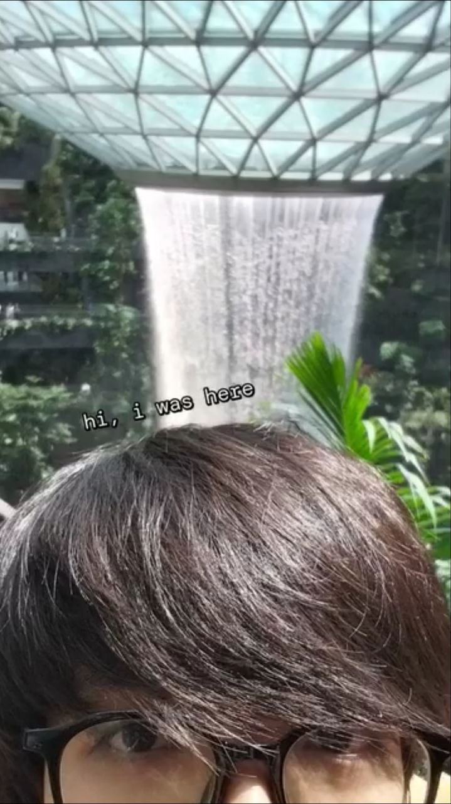
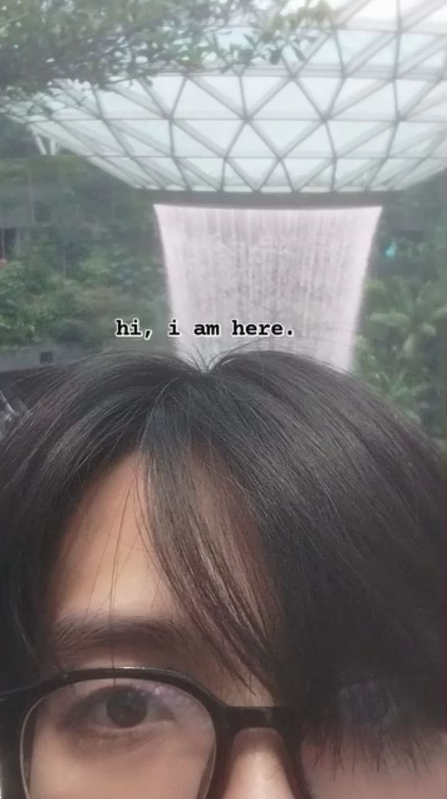
Con đường vẫn thường lệ: đi MRT về Kent Ridge, rồi đi tuyến D2 về UTown. Sau khi được các em đón và gác tạm đồ đạc, chúng tôi chơi loanh quanh đó, lên phòng ngồi nhìn các em apply internship rồi ngồi apply mấy cái cuộc thi của bọn big quant.

Tôi ngủ thiếp đi đến 6h, rồi đi ăn lẩu bò Tàu ở Holland Avenue, tiện thể ngồi xàm với các em về mấy thứ OS với apply linh tinh. Tối về thì bàn chuyện mai đi chơi đâu. Có rất nhiều chỗ tôi chưa khám phá: Sentosa, Universal, lồng kính ở Gardens by the Bay, thủy cung...
Chúng tôi chọn thủy cung cho chill và đỡ nắng.
Chủ Nhật, 20/9
Sáng hôm đó cả bọn dậy trễ nên làm tí kaya toast rồi chém gió, rồi chạy qua HarbourFront để lượn sang thủy cung.
Có một vấn đề: đến HarbourFront thì lại thèm ăn. 5 anh em lại ngồi hốc, chia nhau 2 đĩa pad thái, 2 tô tomyum, 1 tô cơm thịt kho Đài, 1 đĩa cơm rang bò trứng và mỗi đứa thêm một ly trà sữa thái xanh. 100% would do again.
No căng rồi thì anh em chạy ra thủy cung. Đoạn đầu cầm vé vào cổng, anh em được nhân viên hướng dẫn tạo dáng chụp hình (cơ mà lấy hình thì tốn phí nên thôi kệ luôn, cũng không có hình cho mọi người xem). Highlight ở đây chắc là mấy con cá mập với cá đuối, nhất là ở trong bể open, nơi mà có tỉ loài cá mà không con nào cắn nhau. Hơi tiếc vì quầy cá heo đang bảo trì mất.
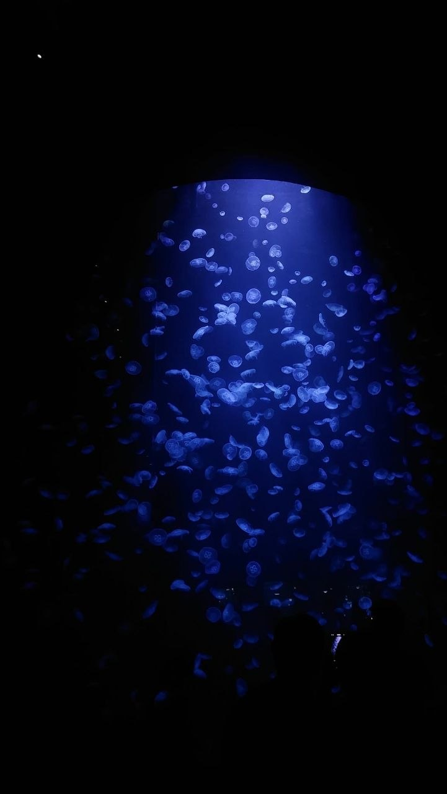
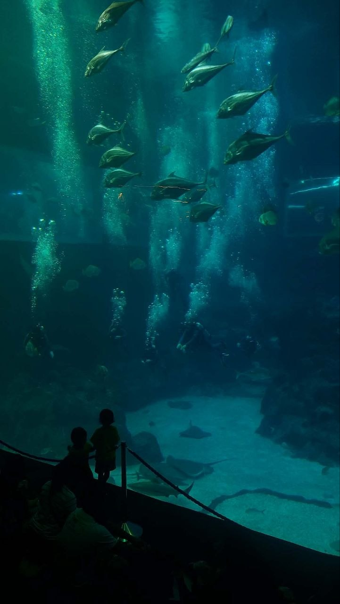
Về tới nơi thì các em khui bánh trung thu. May mà các em khen ngon (nhớ cảm ơn công ty nhé eheheheh). Nhưng vì quá mệt nên anh em cũng ngủ cmnl. Tối thì đốt tiền ở quán Nhật trong UTown, rồi ra Starbucks ngồi ké điều hòa (không mua đồ uống btw) rồi ngồi xàm xí về phỏng vấn quant.
Thứ 2, 21/9
Hôm nay là ngày đầu tiên tôi đi làm tại trụ sở Sing của công ty, nên cũng có khá nhiều thứ để nói.
Tôi dậy từ 7h30, cũng ngồi soi tuyến đường xem nên đi bus, đi MRT, hay nối chuyến kiểu gì đó. Hướng dẫn chỉ đường ghi thời gian sẽ mất 1 tiếng, tôi cũng chuẩn bị sách và truyện để đọc trên đường rồi. Tuy nhiên, chẳng hiểu sao lúc đi thật thì cảm giác thời gian trôi rất nhanh.
Từ trạm MRT đến chỗ làm cũng mất khoảng hơn 10 phút đi bộ. Trời ở Sing cũng khá nóng, tìm được cái lạnh điều hòa càng nhanh càng tốt là mục tiêu tối thượng. Tòa nhà cũng có rất nhiều công ty khác nhau, có cả các trường mẫu giáo, có nhiều khu... nên tôi phải vận công giao tiếp bằng Singlish với bác bảo vệ để tìm được đường lên.
Tới được văn phòng, tôi không vào được vì chưa ghi nhận để làm nhận diện gương mặt (và cũng không có ai làm cả, HR dính tai nạn rất nặng và đang tạm nghỉ). Đứng chờ một hồi lâu thì có chị researcher người Tàu đẹp như người mẫu cũng đang đi làm rồi mở cửa (hơi tiếc vì cuối cùng tôi không có cơ hội giao lưu với các researcher lắm). Vào được văn phòng nhưng loay hoay không biết làm gì tiếp theo, tôi được các anh người Việt (1 ông ở HN, 1 ông ở HCMC nhưng cả 2 ông sang Sing 3 tháng phụ sếp) giúp đỡ tìm chỗ ngồi và chuẩn bị đồ đạc.
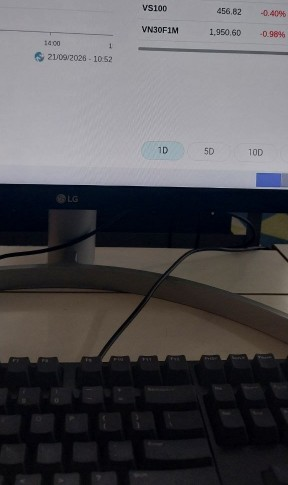
Tôi ngồi ở khu vực có 4 cặp bàn đối diện nhau: trước mặt tôi là ông senior của tôi (người Việt), bên cạnh chúng tôi là 2 ông Ấn (1 research + 1 engineer), rồi nữa là 2 ông Tàu (1 PM + 1 engineer), rồi cuối cùng là 1 ông Ấn (engineer). Sau này, tôi phát hiện chỗ tôi ngồi là chỗ của infra lead vừa xin nghỉ việc. Cũng sau này, tôi mới biết chỗ ngồi đang trống còn lại trong 8 chỗ là của CTO (đang sang VN).
Tôi cũng bắt chuyện được với mọi người ngồi trong đó (có lẽ trừ senior tôi, tôi không hợp tính ông ấy lắm). Tôi cũng có thử bắt chuyện thêm với một số người, vô tình dính luôn ngài director/co-founder của công ty (ông ấy cũng khá cọc btw, high finance people ig). Ngoài ra thì có bà giúp việc trạc tuổi bà ngoại tôi.
Có một điều là văn phòng ở đây dù rất rộng và rất nhiều máy, nhưng số lượng nhân viên thực tế chỉ có gần 15 người. Số lượng đã nghỉ việc là khá nhiều, chưa kể công ty đang không muốn tài trợ visa lao động cho nhân viên, chỉ muốn họ làm ở những văn phòng khác. Các group chat cũ có vẻ sôi động hơn, nhưng giờ mọi người chủ yếu nhắn tin công việc (dù ngồi cách nhau vài bước chân). Về sự sôi động và sự gắn bó thì tôi đánh giá là thua văn phòng ở HCMC (và có lẽ là cả văn phòng HN, dù tôi chưa đến đó bao giờ).
Để chào mừng tôi thì các anh em có dắt nhau đi ăn trưa (cơ mà đắt vl, bữa trưa hơn 10 SGD @@). Tôi biết mấy thanh niên Ấn này học IIT và thi JEE rank rất cao, nên cứ thế mà spam keyword để mấy ổng khoái =)))) Nói thật thì tôi cũng không vibe lắm do không có nhiều điểm chung, dù anh em nhìn chung rất thân thiện.
Có lẽ bà giúp việc là người tôi nói chuyện ở đây nhiều nhất, dù bà chỉ lên công ty đúng 3 buổi mỗi tuần. Bà trạc tuổi bà ngoại tôi, cũng rất khỏe và rất thích tán dóc (đến mức nhiều người phải chủ động né bả, nhưng may thay tôi cũng là người thích tán dóc heheheh). Tôi hỏi bà về gia đình, về thời gian bà ở công ty, rồi mấy câu chuyện vớ vẩn ở văn phòng hay ở Sing nói chung.
Lúc chiều, tôi muốn đớp ít trái cây thì gặp cha PM người Tàu. Tôi hỏi tên, xong nhớ ra thằng cha này để profile picture là nhóm nhạc Perfume (tôi không nghe họ nhiều nhưng có biết và họ rất iconic ở Nhật). Thằng cha này bất ngờ vì không ai hỏi ổng về nhóm đó suốt 12 năm ở công ty. Chúng tôi ngồi nói chuyện về âm nhạc và tiểu thuyết đến hết giờ làm.
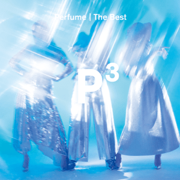
Tối hôm đấy, các em đi dự sinh nhật một người bạn ở PGP. Người này không phải bạn tôi, nên tôi đánh lẻ sang hall KE7 (nơi tôi từng ở hồi 2 năm trước), xong rồi lúc về thì anh em bắt Grab về chung. Lúc đó trời cũng khuya, những người tôi quen ở KE7 đều đã rời đi, những người còn ở lại thì tôi chưa liên lạc được. Tôi dạo bước xung quanh nơi tôi từng trú và sinh hoạt hằng ngày từ cái thời lần đầu xuất ngoại. Từng mảnh ký ức ào ạt ùa về tâm trí tôi. Tôi nhớ những người bạn, những nhân viên ở căn tin, những thầy cô phụ trách ở ký túc xá, những hoạt động hay những món quà ở đây. Dẫu vậy, vì không còn là sinh viên ở trường nữa nên tôi không còn vào được một số căn phòng đặc biệt.
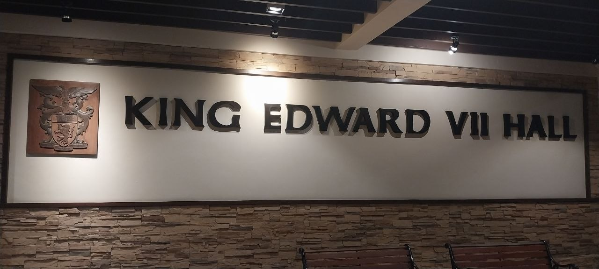
Tôi ghé qua communal hall (tôi từng đánh nhạc ở communal hall một lần rồi eheheheh). Lúc đó, có hai bạn đánh cầu lông xong, đang dọn dẹp thì tôi vào hỏi chuyện. Các bạn là sinh viên năm nhất, học ngành khác nhưng có quan tâm đến CS, ICPC và quant. Các bạn hỏi thì tôi cũng trả lời về quá khứ của tôi ở KE7, cũng như về chuyện học hành ở NUS và công việc hiện tại. Chúng tôi nói chuyện hồi lâu, cũng đã khuya nên bị bảo vệ tóm.
Tôi chưa thể về được liền, nên tôi xin trú tạm qua lounge ở F block. Sau đó, tôi ra ngoài đi vệ sinh, chủ quan rằng study room vẫn bị hỏng khóa như hồi trước nên khóa trong lounge F block. Lúc thử vào study room thì đã quá trễ, tôi bị kẹt ở ngoài, không có điều hòa, điện thoại sắp hết pin, không thể đặt Grab bằng ví điện tử VN. Cũng may là pin trụ đủ lâu đến lúc các em chơi xong, rồi chúng tôi leo xe về nhà.
Thứ 3, 22/9
Sau khi đã làm quen với văn phòng hôm qua, hôm nay đi làm cũng không có gì thú vị lắm. Nếu có gì khác thì chắc là tìm quán ăn rẻ hơn so với hôm qua thôi. Cũng rất may, ở gần công ty có một hawker center cách vài phút đi bộ. Tôi tìm được một quán cơm gà Hải Nam, cơ mà hôm đó quán đóng cửa nên tôi ngậm ngùi ăn cái khác.
Tối hôm đó, tôi liên hệ được với một người bạn cũ ở KE7. Cậu là người Malaysia (gốc Hoa), học ngành Toán, được học bổng ASEAN. Tôi và hội bạn của cậu từng làm AtCoder với nhau khá nhiều (hội đó cũng chơi LMHT nhiều nhưng tôi không có acc ở server SEA). Cậu này trở thành vice president của JCRC trong sự ngỡ ngàng của mọi người. Vice president thì phải đi họp rất rất nhiều để quản lý hoạt động trong hall (song song với việc học trên trường), nên mãi thì cậu mới sắp xếp được thời gian để dắt tôi đi.
Thực tế, cậu ta lúc đó đang ở ngoài với mấy người bạn hồi cậu đi trao đổi ở Đức nên về khá trễ. Tôi ngồi chờ ở phòng ngủ của cậu thì roommate của cậu cũng vừa về. Một lần nữa, tôi giới thiệu về bản thân và quá khứ ở KE7. Cậu roommate này nói rằng kì này mình khá rảnh, nên tôi nhờ cậu ta dắt tôi vào những chỗ hôm qua tôi không vào được (gồm study room và recreational room).

Hội bọn tôi sinh hoạt ở recreational room rất nhiều vì có nhiều ghế sofa, có điều hòa, piano, bàn pool... và những buổi tán dóc về cuộc đời ở đây. Một số CLB cũng tổ chức sinh hoạt tại đây (vd như KE Choir).
Đến gần 10h thì cậu bạn vice president JCRC mới về tới nơi. Chỉ còn một căn phòng cuối cùng tôi muốn vào, và có lẽ cũng chỉ có vị vice president mới giúp tôi được: band room. Vốn là một người thích chơi nhạc, band room là nơi cuốn hút tôi từ lúc tôi đặt chân vào đây 2 năm trước. Tuy nhiên, để được vào band room và sử dụng nhạc cụ thì tôi phải là thành viên của band, vậy nên đúng ra tôi phải tham gia audition (nhưng vì từng jam với band chuyên đi diễn của họ trước đó nên tôi được duyệt thẳng eheheheh).
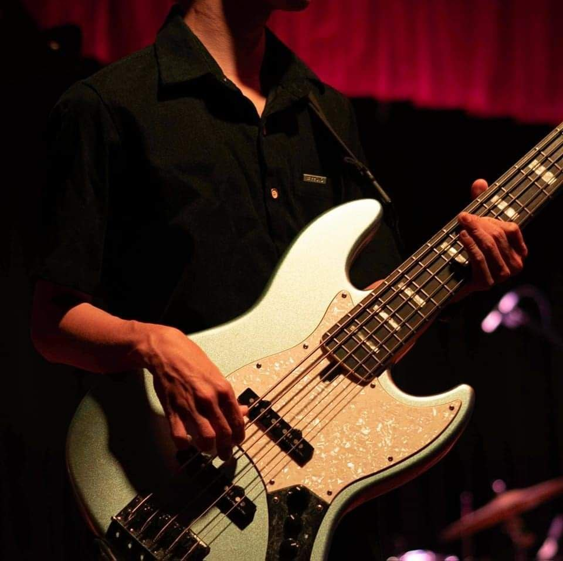
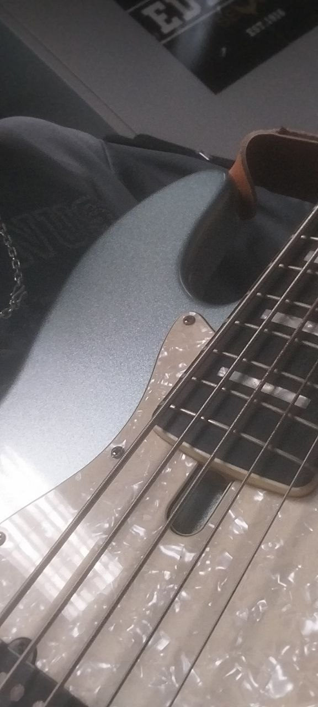
Band room là nơi hoạt động của KE Band, KEnsemble và CMB. Tuy nhiên, bất ngờ thay, KEnsemble ngừng hoạt động vì không tìm được club head.
Còn một "nhân vật" nữa tôi muốn gặp: chú mèo của KE7. Cách đây 2 năm, hall có nuôi một cô mèo tên là Friskie nhưng đã qua đời vào tháng 9-10 2024 (tôi đã ở cạnh nó trong những giây phút cuối cùng). Không lâu sau, có một chú mèo đực đi lạc vào trong hall, và họ tiếp tục nuôi chú mèo này trong 2 năm.
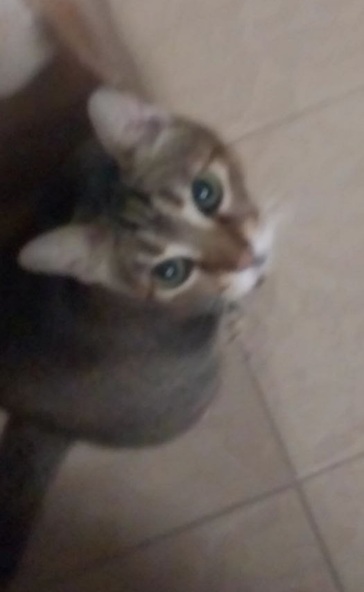
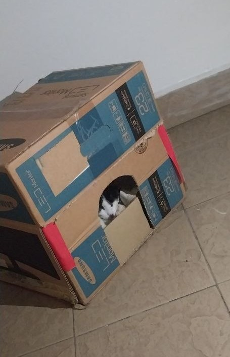
Và thế là tôi đã đi được hết những nơi tôi muốn đi trong KE7. Có lẽ nuối tiếc lớn nhất của tôi chắc là không gặp được nhân viên căn tin (vì lúc họ đi làm thì tôi cũng đi làm). Họ rất thân thiện, luôn nhớ rằng tôi là sinh viên trao đổi người Việt, học từ vựng tiếng Việt để giao tiếp với tôi (từ đó là "đẹp trai" btw). Còn đâu thì, tôi đã rất rất rất mãn nguyện rồi.

Thứ 4, 23/9
Hôm nay cũng là một ngày khá nhạt nhẽo khác ở công ty. Công việc cũng quanh đi quẩn lại chừng đó, không khác gì hồi tôi ở VN (nhưng có senior để alo trực tiếp và văn hóa office chán hơn). Tôi bắt đầu thám hiểm xung quanh văn phòng.
Tôi có kiếm được phòng có tận 2 cái ghế massage!!! Hồi ở NUS, tôi rất thích vào Pitstop cũng vì ghế massage. Thôi thì sáng phải đi làm nên không ra Pitstop được, nên thôi tôi ôm cái ghế massage ở công ty cũng rất sướng hehe.

Hôm nay tôi lại nói chuyện với bà giúp việc. Chúng tôi (lại) nói chuyện rất nhiều, nhưng lần này chủ yếu là về việc làm, rồi mua nhà mua xe ở Sing và ở VN, rồi chuyện lập gia đình nữa.
Công việc có nhiều tiến triển thuận lợi, nhưng tất nhiên tôi không thể kể cái đó ở đây được.
Thứ 5, 24/9
Vẫn là một ngày đi làm như bình thường. Cũng không có gì đặc biệt.
Đến giờ nghỉ trưa, tôi quay lại khu hawker center cũ. Lần này thì quán cơm gà Hải Nam có mở, nên tôi đóng liền 1 suất 5 đô. Lúc tôi đang ăn thì có một ông bác tầm 50 tuổi hơn, mặc sơ mi chỉnh tề, tóc vuốt, đeo đồng hồ cơ bóng loáng đến ngồi đối diện tôi.
Ở công ty nói chuyện hơi chán, thôi thì tôi đành thử nói chuyện với ông này xem. Tôi mở đầu bằng việc khen ổng đẹp trai giống tổng thống Lawrence Wong (ổng đẹp trai thật), và ổng nói là chưa ai khen ổng như vậy cả. Từ ngoại hình, tôi thầm nghĩ rằng ổng là investment banker, nhưng tôi định nghĩ lại vì invesment banker sao lại đi ăn ở hawker center? Hóa ra, ổng đúng là investment banker thật (về tra title thì là managing director & head of investment banking tại chi nhánh Sing của ngân hàng ICBC; gặp vĩ nhân ở quán ăn khiến tôi lại nhớ đến câu chuyện gặp S. Vasoo 2 năm trước). Ông kể lần cuối sang VN là 10 năm trước, khi cố gắng thuyết phục Vinamilk. Giấy phép được thông qua nhưng Vinamilk sủi kèo. Ông cũng không làm việc với các doanh nghiệp VN nhiều nữa.
Lúc về văn phòng, tôi có nói chuyện với 1 anh người Việt vốn làm ở văn phòng HN nhưng được điều sang 3 tháng để phụ việc máy móc. Anh sinh năm 1999 nhưng đã có vợ và con nhỏ!!! Câu chuyện vẫn là cuộc sống và công việc ở Sing và VN, câu chuyện ngày xưa anh đi học với bạn bè (mà tôi đã nghe tên qua).
Tối về, tôi được một người anh sinh năm 1999 khác (cựu APCS btw, nhưng ông này đang học PhD và tình cảm còn lông bông lắm) sang nhậu tại gia. Ngoài ra còn tụ họp thêm các anh em APCS khác ngồi chém gió trên trời dưới biển.

Thứ 6, 25/9
Hôm nay là ngày cuối cùng tôi làm việc ở văn phòng Sing. Mọi thứ vẫn vậy, công việc không có gì quá đặc biệt.
Trưa nay quán cơm gà không mở, nên tôi ăn tạm cơm thố sườn heo quay. Cơ mà nó cứ đắng đắng sao ấy, rồi phần salad hình như có cá (siêu) mặn nên tôi không ăn nổi :(
Tuy nhiên, tôi được bà giúp việc tặng cái bánh waffle nhân bơ đậu phộng, vì bà biết tôi sắp về nước. Tôi không phải tín đồ bơ đậu phộng, nhưng với tôi thì cái bánh này khá ngon.

Tôi vẫn tán dóc với bà cụ thôi. Hôm nay tôi có lỡ ăn mấy miếng nho của đồng nghiệp (vì bỏ tủ chung). Bà có dặn tôi là đừng làm thế (nhưng đớp thêm 1-2 trái chắc cũng không sao), rồi kể rằng ông đồng nghiệp này tính tình không ổn ("something wrong in here" rồi chỉ tay vào đầu) =)))))
Thời gian cũng khá trễ. Tôi thu xếp đồ đạc, đi quanh văn phòng, ngó từng ngóc ngách mà tôi chưa dám ngó trước kia, rồi chào từng người đang còn ở lại văn phòng trước lúc tôi về. Tôi biết rằng tôi không thể ở lại đây (mà nếu có thì cũng chán chết đi được), nhưng tôi vẫn còn chút luyến tiếc cảm giác thật sự được ngồi làm việc ở Sing. Bà giúp việc là người tiễn tôi đi, vỗ vai tôi, gọi tôi là "good boy", rồi chào tạm biệt. Tôi hy vọng nếu còn cơ hội thì tôi có thể thăm bà ít lần.

Vì lỡ ở lại văn phòng hơi lâu nên tôi trễ hẹn với một người bạn đang làm ở Shopee. Chúng tôi dù học chung môn CS3210 nhưng chưa bao giờ gặp mặt nhau ngoài đời, và chỉ nhắn tin với nhau với số lần đếm trên đầu ngón tay. Dù vậy, chúng tôi cũng rất nể nhau nên tôi có gọi cậu để gặp trực tiếp một lần.
Chúng tôi kéo nhau ra Chinatown kiếm một cái hawker center. Cũng ngồi xàm xí về chuyện học CS và môn CS3210, chuyện phỏng vấn với đi làm ở big tech và quant, và mấy cái bài toán hệ thống. Ăn xong thì tôi muốn tìm tráng miệng, nhưng cuốc bộ 1 tiếng liên tục ở Chinatown lúc gần 10h tối chả thấy gì đáng thử cả. Thế là thôi chúng tôi đi về luôn =)))))))
Thứ 7, 26/9
Vì tôi bay về nước vào trưa chủ nhật nên thứ 7 là ngày duy nhất để tôi đi chơi.
Lúc xuống thang máy, tôi gặp lại một người bạn cũ ở KE7 (giờ đang ở UTown). Cậu ta là người Malaysia, học CS nhưng lại thích học tiếng Việt. Cậu từng luyện tiếng Việt với tôi vài lần, và lúc tôi về nước thì cậu nhắn chào bằng tiếng Việt.
Tôi cùng các em ra ERC tầng 2, có đi ngang qua SCALE (đơn vị phụ trách DiscoverNUS). Rất hay là tình cờ, tôi cũng gặp lại 3 người anh cũng từng đi DiscoverNUS (trong đó 2 người đi cùng đợt với tôi) và giờ đang học Master. Chúng tôi nói chuyện tí tẹo, tôi cũng tiết lộ là tôi đang có vài phương án khác ngoài NUS nếu tôi muốn học Master. Họ vẫn nói là cơ hội vẫn còn để tôi suy nghĩ =))))
Trưa thì có đứa rủ ra PGP ăn mì mala. Đây cũng là món tôi rất mong chờ, nhưng bữa giờ đi làm về trễ quá nên không ăn được. Mì mala là món đầu tiên tôi ăn sau khi đáp xuống Sing/NUS lần đầu. Lúc xuống quầy, tôi đá luôn sang quán cơm gà Hải Nam. Cơm gà Hải Nam PGP là món cuối cùng tôi ăn trước khi tôi trở về nước năm đó. Thế là tôi sẵn lòng hốc luôn cả 2 món =))))
Ngoài ra, rất hay nữa là quầy cơm gà giờ được bán bởi 2 anh chị người Việt (họ nói tiếng Anh và tiếng Hoa nhưng accent rất lạ, phải đến lúc họ giao tiếp với nhau thì tôi mới nghe ra là người Việt). Lúc đầu, tôi còn đặt bằng Singlish, nhưng nghe thấy tiếng Việt là tôi nói tiếng Việt luôn cho khỏe =)))) Chị thu ngân mới tập sự được 2 ngày, lại nghe giọng người Việt mua hàng nên cũng hơi bối rối xíu =))))
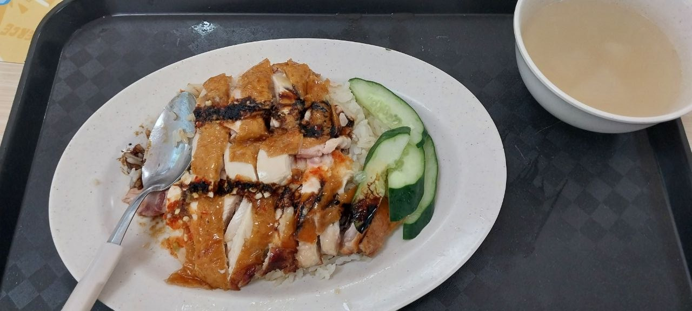
Bọn trẻ con trước giờ chỉ biết mala là món ngon nhất ở PGP rồi chê các món khác. Bọn nó đâu biết được món cơm gà này là cứu cánh của tôi khi căn tin ở hall đóng cửa đâu =)))) Cho các em một miếng là hiểu ngay vấn đề. Mỗi tội cơm gà quay + thêm gà giờ là 5 đô thay vì 4.5 đô như hồi trước.
Ăn trưa xong thì chúng tôi ra Central Library để các em ôn bài, còn tôi thì tranh thủ dạo các tòa COM1-2-3-4 và các phòng LT tôi từng học. Vì đang là recess week, khá vắng người nên việc tham quan cũng thoải mái hơn. Một lần nữa, ký ức của những năm tháng đi học ở đây ùa về, khiến tôi có chút xúc động. Dẫu sao chăng nữa, đây là nơi đánh dấu thời điểm tôi phát triển mạnh mẽ: học thêm những kiến thức mới ở ngôi trường top thế giới, xây dựng các mối quan hệ mới, dám thử sức đi phỏng vấn (và suýt đậu intern) những quantitative finance firm giàu có và lớn mạnh nhất thế giới.
Tối thì tôi bắt đầu soạn sửa để chuẩn bị về nước, và viết nốt cho xong cái bài này.
Kết
Nói là "một tuần đi làm ở Tân Gia Ba", nhưng thực sự chỉ có ngày đầu là thú vị vì còn mới. Còn lại highlight ở những ngày sau là khoảnh khắc tụ họp anh em, là làm quen với những người bạn mới, là tìm lại ký ức cũ làm nên con người mình, vốn là mục đích thật sự của chuyến đi lần này.
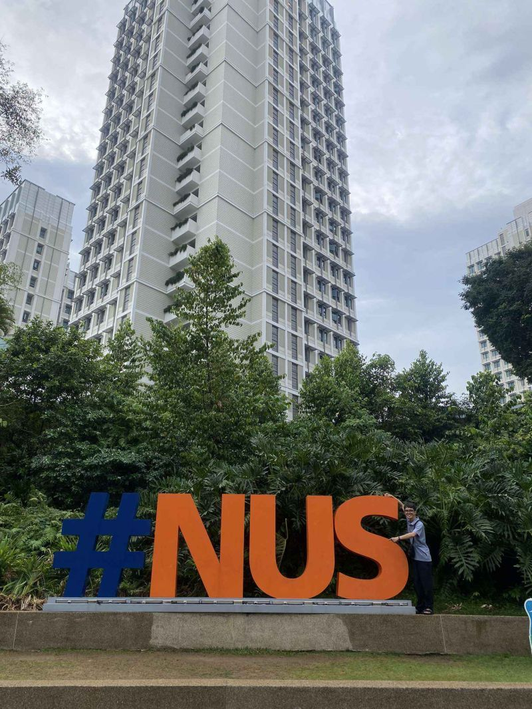
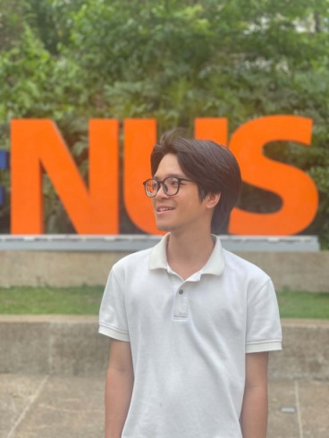
Chân thành cảm ơn tới:
- Các em: Triệu, Sơn, Lâm, Danh, Thịnh, Nhân, Thành, Huy;
- Các đồng nghiệp và bà giúp việc ở Quỹ Giấu tên (trụ sở Singapore);
- Các bạn: Yu Wen, Terrance, Keith, Jia Cheng;
- Các bạn: Zhan Yang, Hong Boon;
- Các anh: Yang, Hiếu, Hiền, Tùng;
- Mr. Tay;
- Và rất nhiều người khác tôi không nhớ ra để liệt kê.